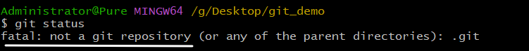
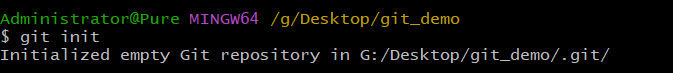
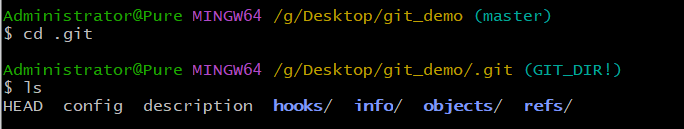
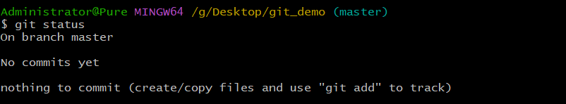
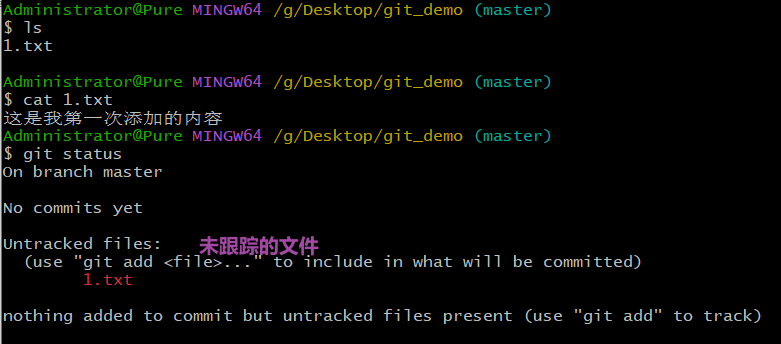
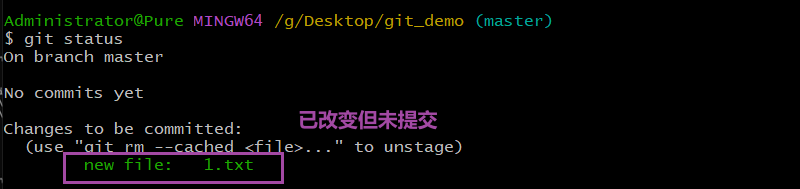
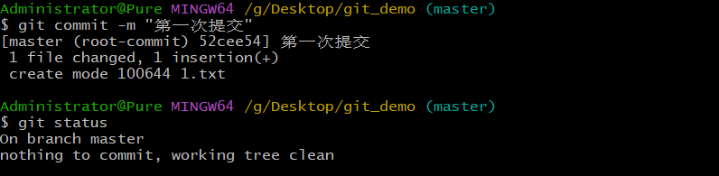
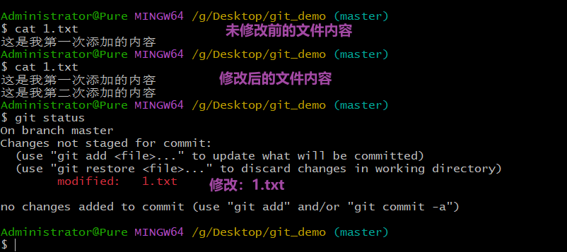
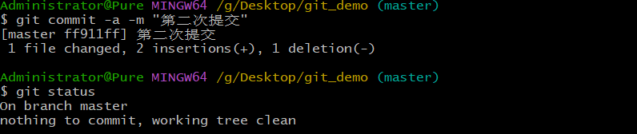

Git的基本操作
文章目录
补充：Git的文件状态
Git的文件有两种状态：未跟踪和已跟踪。未跟踪指文件没有被git所管理，已跟踪指文件已被git管理。已跟踪的文件又有三种状态：未修改，已修改和暂存
未修改： 表示磁盘中的文件和Git仓库中文件相同，没有修改。
已修改： 表示磁盘中的文件已被修改，和Git仓库中文件不同。
暂存： 表示文件修改已被保存，但尚未提交到Git仓库。
可以通过git status来查看文件状态
Git基本使用
基于文件的几种状态演示几个常用命令
查看本地库状态
|
|
新建一个空白文件夹，在此文件夹下打开Git Bash，执行git status指令

会提示我们这并不是一个Git仓库，这就需要我们初始化Git仓库了
初始化本地库
|
|
当我们执行完git init后

会提醒我们，初始化了一个空的Git仓库，并在当前目录下生成一个名为.git的隐藏目录
再次执行git stustus，会出现如下信息，这就表示我们的仓库已经完成了初始化

进入.git隐藏目录，会有如下文件：

因为这是一个新的Git仓库，里面没有实质性内容，研究意义不大，这里不做赘述，后面会单独讲解.git文件夹。
注意：现实开发中用到git init指令的机会不大，因为现实开发中公司的库一般都已经创建好了，我们直接git clone远程库即可，后面会说。
添加暂存区（未跟踪—>暂存）
|
|
现在创建一个1.txt并添加一些内容，执行git status，会提示我们这是一个未跟踪的文件，使用git add将文件添加到暂存区。

现在执行git add命令，并使用git status命令查看文件状态，发现文件提示颜色变成了绿色，这就表示我们的文件已经提交到了暂存区，变成了暂存状态

添加本地库（暂存—>未修改）
|
|
使用git commit命令将文件提交到本地库，再次使用git status命令查看文件状态，得到提示信息：没有任何文件需要提交，干净的工作树。这就表示我们的文件变为了未修改状态。

未修改—>已修改
如何让文件从未修改状态变成已修改状态呢，直接修改文件即可，当文件修改后，再次查看文件状态，发现文件已经变成了已修改状态。

修改后的文件再次通过git add提交到暂存区，git commit提交到本地库就可变为未修改状态。
是不是觉得很麻烦，其实Git已经给我们提示了，使用下面命令即可直接将修改得到问文件提交到本地库
|
|

总结
文件状态
- 未跟踪
- 已跟踪
- 已修改
- 未修改
- 暂存
基本操作
| 命令 | 作用 |
|---|---|
| git init | 初始化本地库 |
| git status | 查看本地库状态 |
| git add filename git add . git add * |
添加指定文件到暂存区 ./* 表示所有文件 |
| git commit -m “日志信息” <文件> | 添加到本地库 不指定文件默认为全部 |
文章作者 Pure3417
上次更新 2023-01-26